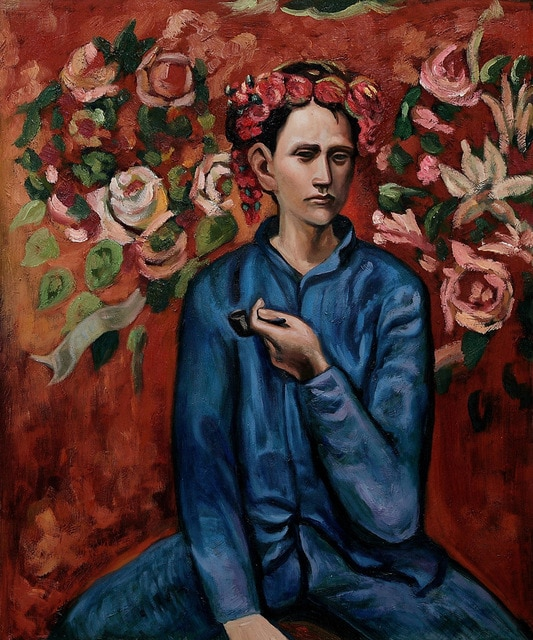
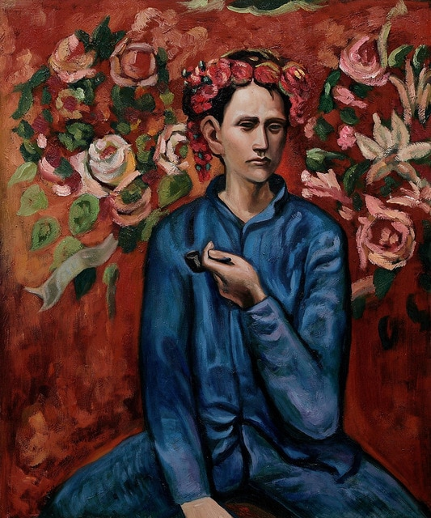

The purpose of art of is washing the dust of daily life off our souls -Pablo Picasso
| Girl with the
Pearl Earring |
Girl with a Pearl Earring is an oil painting by Dutch Golden Age painter Johannes Vermeer. It is a tronie of a girl wearing a headscarf and a pearl earring. The painting has been in the collection of the Mauritshuis in The Hague since 1902. | Garçon à la pipe  |
Garçon à la Pipe is a painting by Pablo Picasso. It was painted in 1905 when Picasso was 24 years old, during his Rose Period, soon after he settled in the Montmartre section of Paris, France. The oil on canvas painting depicts a Parisian boy holding a pipe in his left hand and wearing a garland or wreath of flowers. |
| Mona Lisa |
The Mona Lisa is a half-length portrait painting by the Italian Renaissance artist Leonardo da Vinci that has been described as "the best known, the most visited, the most written about, the most sung about, the most parodied work of art in the world" | Starry Night |
The Starry Night is an oil on canvas by the Dutch post-impressionist painter Vincent van Gogh. Painted in June 1889, it depicts the view from the east-facing window of his asylum room at Saint-Rémy-de-Provence, just before sunrise, with the addition of an idealized village. |